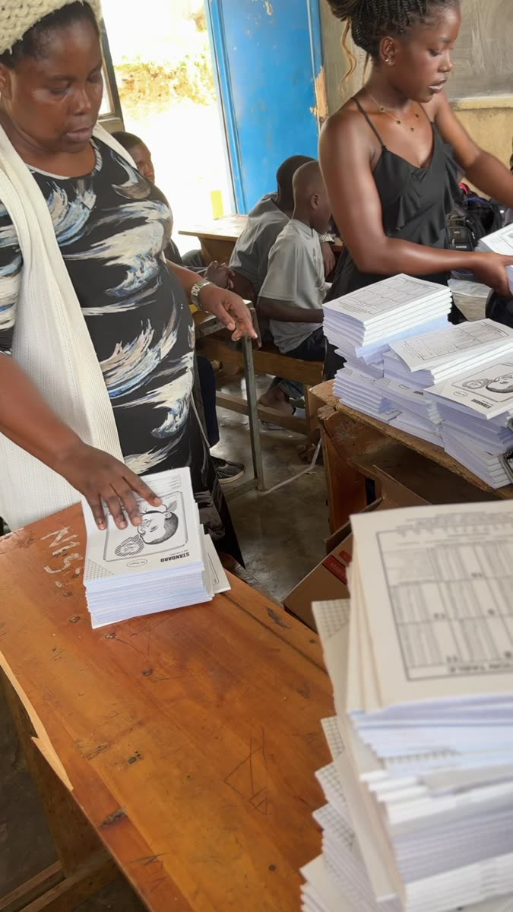
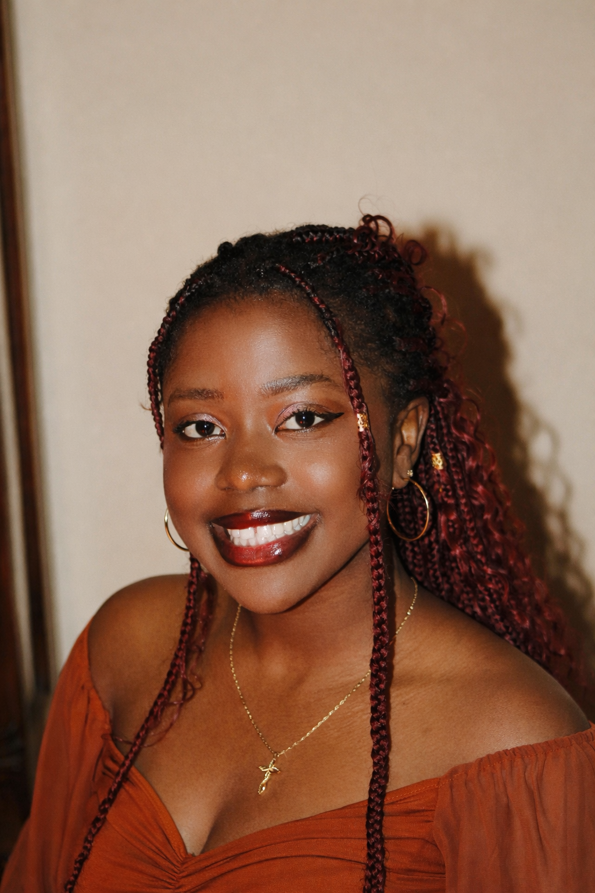

Barere exists because no child should be pushed out of the classroom by poverty. Here is what we believe, how we work, and who makes it happen.
Many of the children Barere serves come from households facing severe financial hardship, single parent homes, parental rejection, or unsafe living conditions. Before joining, many had been out of school for extended periods because their families simply could not afford tuition, materials, or meals.
Barere was created to remove those barriers directly, ensuring children are not only enrolled in school, but supported socially, emotionally, and economically alongside their families.
A Rwanda where no child is pushed out of school by poverty. We began in Kibuye and are growing toward every one of Rwanda's 30 districts, so that children everywhere grow up supported, in school, and able to imagine a future beyond the streets.
To support vulnerable children back into education and keep them there, through a holistic model of school support, mentorship, family engagement, and long term economic empowerment.

Barere currently serves 23 children between the ages of 3 and 18 from households facing real hardship:
We do not just get children back into classrooms. We build the home and community conditions that let them stay.
Tuition, notebooks, uniforms, supplies, and school feeding: everything a child needs not just to enroll, but to participate fully and remain in school consistently.
One on one check ins and group workshops that build confidence, life skills, and the ability to process challenges and imagine a future beyond hard circumstances.
Because a child's challenges start at home, we support guardians directly, including startup funds that helped one single mother restart her fruit business.

Beyond tuition and materials, Barere has held more than ten workshops focused on confidence, goal setting, and life skills, and continues one on one mentorship so every child is seen, heard, and supported through whatever they are facing.
We are just getting started. Barere began with one belief, that no child should lose their education to poverty, and it is growing into a team of people who share it.

Founder
Growing up in Kibuye, Rwanda, Providence saw firsthand how poverty pushes children out of school. That experience inspired the founding of Barere in June 2025, to help them return, and stay.
Operations Manager
Oda is a passionate believer in just how transformative quality education and mentorship can be in a child's life, and that belief is exactly what drew her to Barere, where she gets to help make it real for children across Rwanda every day!

On the Ground
Teachers and school staff, local guardians, and community volunteers help Barere reach each child: sorting supplies, hosting workshops, and following up with families between visits.
We are looking for board members who want to help shape Barere's strategy and grow our impact, in Rwanda and beyond. If that sounds like you, we would love to hear from you.
Apply for the board ↗